Overview
This article will demonstrate some fantastic ggplot2 extension packages.
Note, an alternative is to use ggplot2 code directly instead. This
may be easier depending on your familiarity with ggblanket/ggplot2 and
the relevant extension package. The set_blanket() function
used to get a lot of the ggblanket style also works with ggplot2.
library(dplyr)
library(stringr)
library(ggplot2)
library(scales)
library(ggblanket)
library(patchwork)
library(palmerpenguins)
set_blanket()
penguins2 <- penguins |>
labelled::set_variable_labels(
bill_length_mm = "Bill length (mm)",
bill_depth_mm = "Bill depth (mm)",
flipper_length_mm = "Flipper length (mm)",
body_mass_g = "Body mass (g)",
) |>
mutate(sex = factor(sex, labels = c("Female", "Male")))patchwork
The patchwork package enables plots to be patched together.
A convenient hack to add a panel centred title can be to add a
facet_wrap layer with a character title string for the
facets argument.
Otherwise you will need to modify margins
p1 <- mtcars |>
gg_point(
x = mpg,
y = disp,
) +
facet_wrap(~"Plot 1")
p2 <- mtcars |>
gg_boxplot(
x = gear,
y = disp,
group = gear,
width = 0.5,
) +
facet_wrap(~"Plot 2")
p3 <- mtcars |>
gg_smooth(
x = disp,
y = qsec,
) +
facet_wrap(~"Plot 3")
(p1 + p2) / p3 +
plot_annotation(
title = "A collection of plots patched together",
subtitle = "Works so nice!",
theme = light_mode_r() +
theme(
plot.title = element_text(margin = margin(t = -11)),
plot.subtitle = element_text(margin = margin(t = 5.5)),
)
)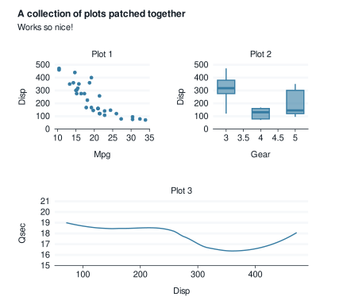
marquee
The marquee package supports using markdown in text.
penguins2 |>
gg_point(
x = bill_depth_mm,
y = bill_length_mm,
col = species,
title = "**{.#0095a8ff Adelie}**, **{.#ffa600ff Chinstrap}**, *and*
**{.#003f5cff Gentoo}** penguin species",
) +
theme(legend.position = "none") +
theme(plot.title = marquee::element_marquee()) 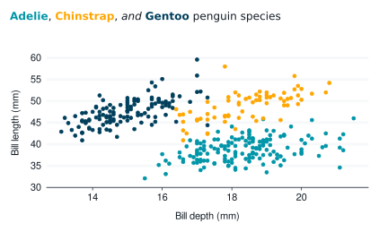
showtext
The showtext package enables the use of different fonts in plots. The
*_mode_* theme functions provide a base_family
argument.
head(sysfonts::font_families_google())
#> [1] "ABeeZee" "Abel" "Abhaya Libre" "Abril Fatface"
#> [5] "Aclonica" "Acme"
sysfonts::font_add_google("Covered By Your Grace", "grace")
sysfonts::font_add_google('Roboto Slab', 'roboto_slab')
sysfonts::font_add_google('Syne Mono', 'syne')
showtext::showtext_auto(enable = TRUE)
penguins2 |>
gg_point(
x = flipper_length_mm,
y = body_mass_g,
col = sex,
facet = species,
title = "penguins2 body mass by flipper length",
subtitle = "Palmer Archipelago, Antarctica",
caption = "Source: Gorman, 2020",
mode = light_mode_r(base_family = "grace"),
) +
theme(
plot.title = element_text(family = "roboto_slab"),
plot.subtitle = element_text(family = "syne")
)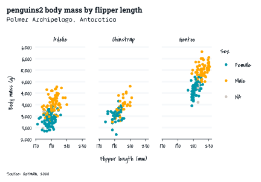
showtext::showtext_auto(enable = FALSE)gghighlight
The gghighlight package enables geoms or parts thereof to be highlighted.
penguins2 |>
gg_point(
x = flipper_length_mm,
y = body_mass_g,
) +
gghighlight::gghighlight(body_mass_g >= 5000)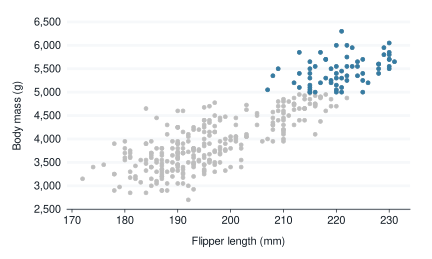
The gg_* function builds the scale for the data that it
thinks will be within the panel. Therefore in some situations, this must
be taken into account to ensure the scale builds correctly.
penguins2 |>
gg_histogram(
x = flipper_length_mm,
col = species,
x_breaks_n = 4,
) + #build the scale for all data
facet_wrap(~species) + #then add facet layer
gghighlight::gghighlight() 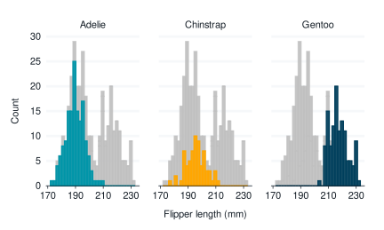
ggforce
The ggforce package includes numerous extra geoms, stats etc.
library(ggforce)
geom_bspline()
#> geom_path: arrow = NULL, lineend = butt, na.rm = FALSE
#> stat_bspline: na.rm = FALSE, n = 100, type = clamped
#> position_identity
economics |>
slice_head(n = 35) |>
gg_path(
stat = "bspline", n = 100, type = "clamped",
x = date,
y = unemploy,
linewidth = 1,
y_label = "Unemployment",
) 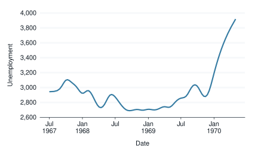
geom_mark_hull()
#> geom_mark_hull: na.rm = FALSE, expand = 5, radius = 2.5, concavity = 2, label.margin = c(2, 2, 2, 2), label.width = NULL, label.minwidth = 50, label.fontsize = 12, label.family = , label.lineheight = 1, label.fontface = c("bold", "plain"), label.hjust = 0, label.fill = white, label.colour = black, label.buffer = 10, con.colour = black, con.size = 0.5, con.type = elbow, con.linetype = 1, con.border = one, con.cap = 3, con.arrow = NULL
#> stat_identity: na.rm = FALSE
#> position_identity
penguins2 |>
gg_blanket(
geom = "mark_hull",
x = flipper_length_mm,
y = body_mass_g,
col = species,
coord = coord_cartesian(),
) +
geom_point()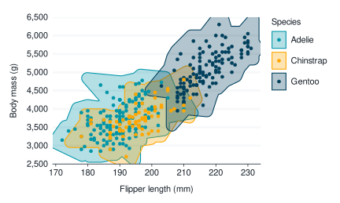
ggrepel
The ggrepel package can be used to neatly avoid overlapping labels.
library(ggrepel)
geom_text_repel()
#> geom_text_repel: parse = FALSE, na.rm = FALSE, box.padding = 0.25, point.padding = 1e-06, min.segment.length = 0.5, arrow = NULL, force = 1, force_pull = 1, max.time = 0.5, max.iter = 10000, max.overlaps = 10, nudge_x = 0, nudge_y = 0, xlim = c(NA, NA), ylim = c(NA, NA), direction = both, seed = NA, verbose = FALSE
#> stat_identity: na.rm = FALSE
#> position_identity
mtcars |>
tibble::rownames_to_column("car") |>
filter(wt > 2.75, wt < 3.45) |>
gg_point(
x = wt,
y = mpg,
label = car,
) +
geom_text_repel() 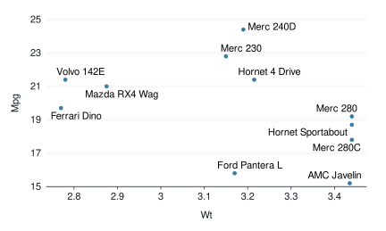
ggbeeswarm
The ggbeeswarm package enables beeswarm plots.
library(ggbeeswarm)
geom_beeswarm()
#> geom_point: na.rm = FALSE
#> stat_identity: na.rm = FALSE
#> position_beeswarm
geom_quasirandom()
#> geom_point: na.rm = FALSE
#> stat_identity: na.rm = FALSE
#> position_quasirandom
p1 <- penguins2 |>
gg_point(
position = position_beeswarm(),
x = sex,
y = flipper_length_mm,
col = sex,
x_labels = \(x) str_to_upper(str_sub(x, 1, 1)),
subtitle = "\nBeeswarm",
) +
theme(legend.position = "none")
p2 <- penguins2 |>
gg_point(
position = ggbeeswarm::position_quasirandom(),
x = sex,
y = flipper_length_mm,
col = sex,
x_labels = \(x) str_to_upper(str_sub(x, 1, 1)),
subtitle = "\nQuasirandom",
) +
theme(legend.position = "none")
p1 + p2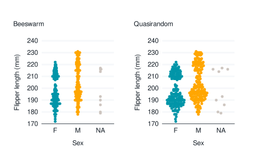
ggridges
The ggridges package enables ridgeline plots.
library(ggridges)
geom_density_ridges()
#> geom_density_ridges: na.rm = FALSE, panel_scaling = TRUE
#> stat_density_ridges: na.rm = FALSE
#> position_points_sina
ggridges::Catalan_elections |>
rename_with(snakecase::to_snake_case) |>
mutate(year = factor(year)) |>
gg_blanket(
geom = "density_ridges",
stat = "density_ridges",
coord = coord_cartesian(xlim = c(0, 100)),
x = percent,
y = year,
col = option,
colour = "white",
y_expand = expansion(c(0, 0.125)),
alpha = 0.9,
)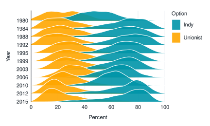
ggdist
The ggdist package enables the visualisation of uncertainty.
library(ggdist)
library(distributional)
geom_slabinterval()
#> geom_slabinterval: orientation = NA, normalize = all, fill_type = segments, interval_size_domain = c(1, 6), interval_size_range = c(0.6, 1.4), fatten_point = 1.8, arrow = NULL, show_slab = TRUE, show_point = TRUE, show_interval = TRUE, subguide = none, na.rm = FALSE
#> stat_identity: na.rm = FALSE
#> position_identity
set.seed(123)
data.frame(
distribution = c("Gamma(2,1)", "Normal(5,1)", "Mixture"),
values = c(
dist_gamma(2, 1),
dist_normal(5, 1),
dist_mixture(
dist_gamma(2, 1),
dist_normal(5, 1),
weights = c(0.4, 0.6))
)) |>
gg_blanket(
geom = "slabinterval",
stat = "slabinterval",
y = distribution,
mapping = aes(dist = values),
colour = blue,
fill = blue,
alpha = 0.6,
y_expand = c(0.05, 0.05),
# show_slab = FALSE,
# show_interval = FALSE,
# side = "both",
) +
theme(legend.position = "none")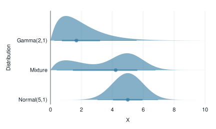
geom_lineribbon()
#> geom_lineribbon: step = FALSE, orientation = NA, na.rm = FALSE
#> stat_identity: na.rm = FALSE
#> position_identity
set.seed(123)
tibble(x = 1:10) |>
group_by(across(everything())) |>
do(tibble(y = rnorm(100, .$x))) |>
median_qi(.width = c(0.5, 0.8, 0.95)) |>
mutate(.width = factor(.width)) |>
gg_blanket(
geom = "lineribbon",
x = x,
y = y,
ymin = .lower,
ymax = .upper,
col = .width,
colour = viridis::mako(n = 9)[c(1)],
col_legend_rev = TRUE,
col_palette = viridis::mako(n = 9)[c(4,6,9)],
)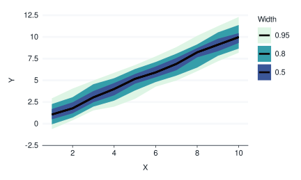
ggdensity
The ggdensity package provides visualizations of density estimates.
library(ggdensity)
geom_hdr()
#> geom_hdr: na.rm = FALSE
#> stat_hdr: na.rm = FALSE
#> position_identity
set.seed(123)
data.frame(
x = rnorm(1000),
y = rnorm(1000),
z = c(rep("A", times = 500), rep("B", times = 500))
) |>
gg_blanket(
geom = "hdr",
stat = "hdr",
x = x,
y = y,
colour = NA,
y_symmetric = FALSE,
) +
guides(colour = FALSE, fill = FALSE)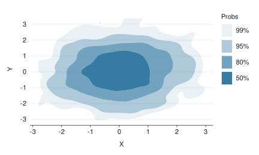
set.seed(123)
data.frame(
x = rnorm(1000),
y = rnorm(1000),
z = c(rep("A", times = 500), rep("B", times = 500))
) |>
gg_blanket(
geom = "hdr",
stat = "hdr",
x = x,
y = y,
col = z,
facet = z,
colour = NA,
y_symmetric = FALSE,
) 
ggpattern
library(ggpattern)
penguins2 |>
group_by(species, sex) |>
summarise(across(body_mass_g, \(x) mean(x))) |>
tidyr::drop_na() |>
labelled::copy_labels_from(penguins2) |>
gg_blanket(
geom = "col_pattern",
position = "dodge",
y = species,
x = body_mass_g,
col = sex,
mapping = aes(pattern = sex),
width = 0.75,
) 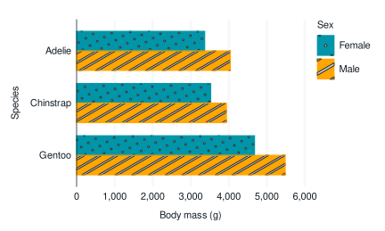
paletteer
The paletteer package provides access to most of the palettes within R.
library(paletteer)
p1 <- penguins2 |>
gg_point(
x = flipper_length_mm,
y = body_mass_g,
col = species,
col_palette = paletteer_d("RColorBrewer::Dark2"),
x_breaks_n = 4,
) +
theme(legend.position = "none")
p2 <- penguins2 |>
gg_point(
x = flipper_length_mm,
y = body_mass_g,
col = bill_depth_mm,
col_palette = paletteer_c("viridis::rocket", 9),
x_breaks_n = 4,
) +
theme(legend.position = "none")
p1 + p2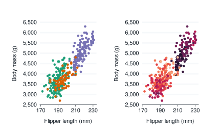
ggblend
The ggblend package provides blending of colours. You must use a graphics device that supports blending.
p1 <- penguins2 |>
gg_density(
x = flipper_length_mm,
col = species,
y_symmetric = FALSE,
) +
facet_wrap(~"Normal") +
ggeasy::easy_remove_x_axis() +
ggeasy::easy_remove_y_axis()
p2 <- penguins2 |>
gg_blanket(
stat = "density",
x = flipper_length_mm,
col = species,
y_symmetric = FALSE,
) +
facet_wrap(~"Blended") +
geom_density(alpha = 0.6) |> ggblend::blend(blend = "multiply") +
ggeasy::easy_remove_x_axis() +
ggeasy::easy_remove_y_axis()
p1 + p2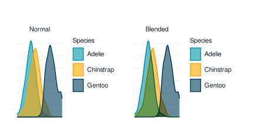
ggh4x
The ggh4x package includes enhanced facet functionality.
iris |>
rename_with(\(x) snakecase::to_snake_case(x)) |>
mutate(across(species, \(x) str_to_sentence(x))) |>
mutate(size = if_else(species == "Setosa", "Short Leaves", "Long Leaves")) |>
gg_point(
x = sepal_width,
y = sepal_length,
x_breaks_n = 4,
) +
ggh4x::facet_nested(
cols = vars(size, species),
nest_line = TRUE,
solo_line = TRUE,
) +
theme(strip.text.x = element_text(margin = margin(t = 2.5, b = 5)))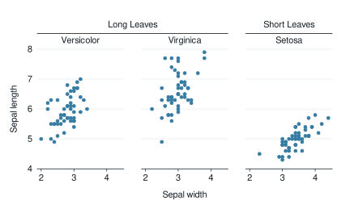
ggeasy
The ggeasy package provides a lot of support for easily modifying themes. Removing axes and gridlines is often useful.
library(ggeasy)
penguins2 |>
gg_jitter(
x = species,
y = body_mass_g,
col = sex,
) +
light_mode_t() +
easy_remove_y_gridlines() +
easy_remove_x_axis(what = c("line", "ticks")) +
easy_remove_legend_title()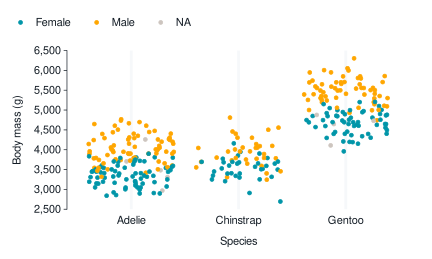